1 / 3

Сайт с самыми->
❮
❯
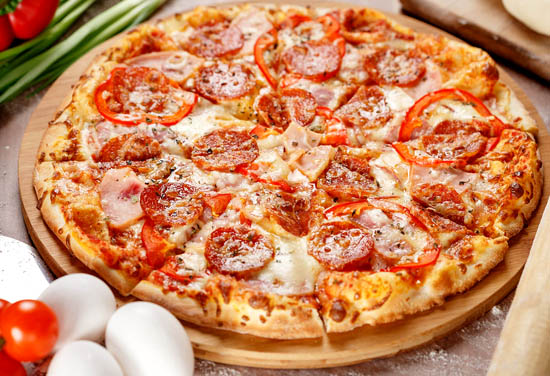
Пицца
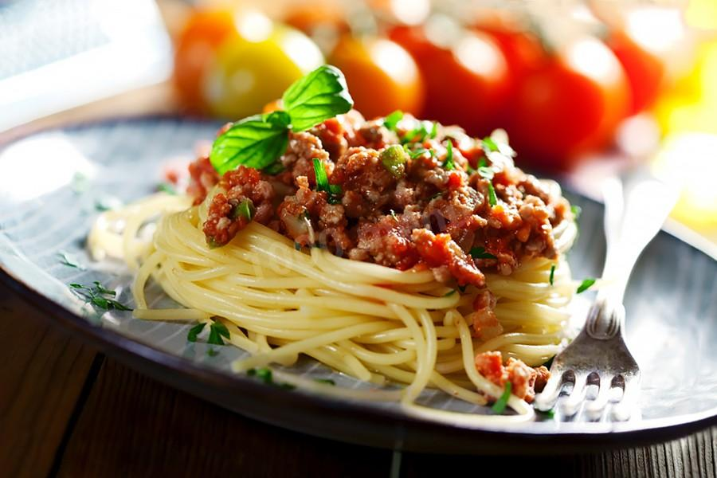
Паста "Болоньезе"
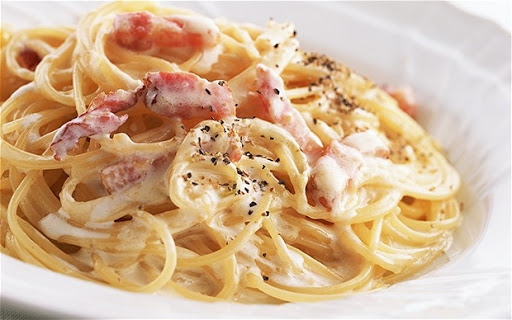
Паста "Карбонара"
Куриный бульон
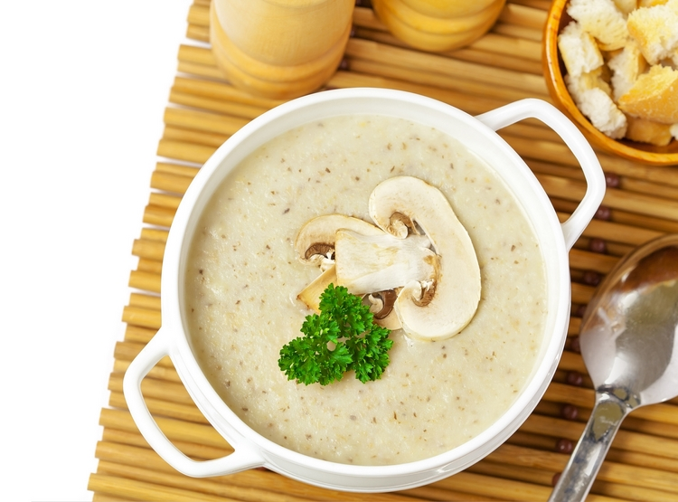
Грибной крем суп
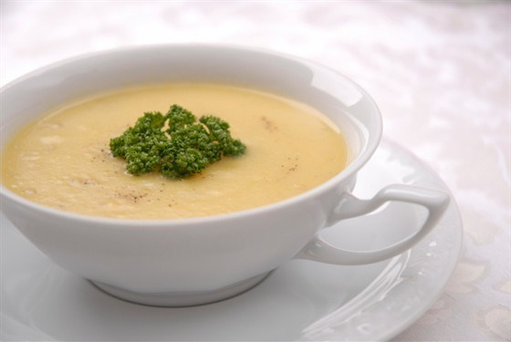
Сырный крем-суп
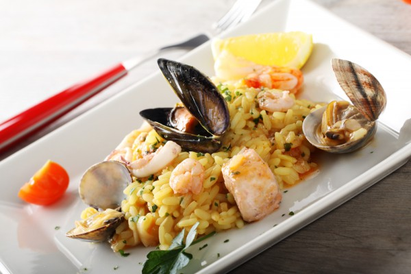
Риозотто с морепродуктами
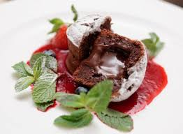
Шоколадный фондан с ягодным соусом
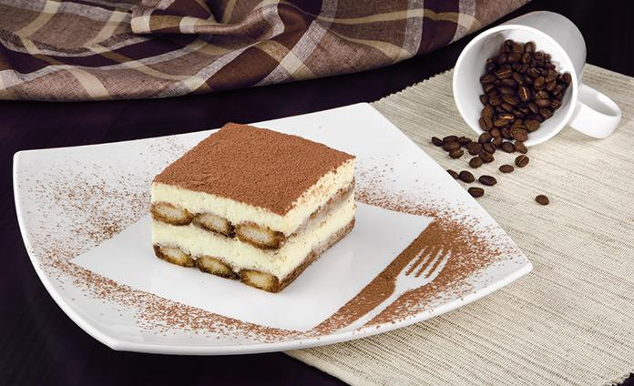
Тирамису
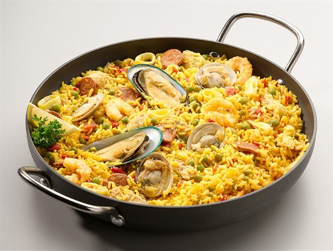
Паэлья
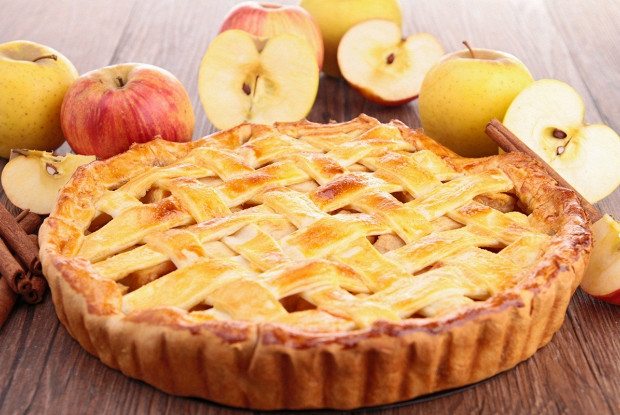
Яблочный тарт
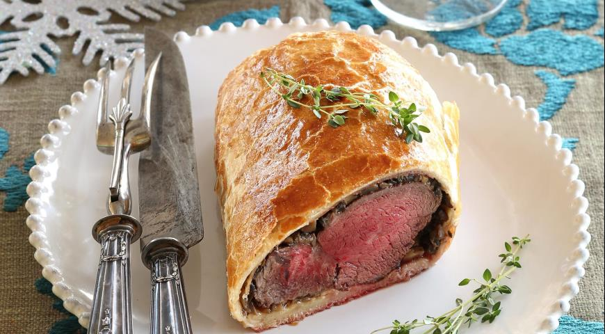
Биф Веллингтон